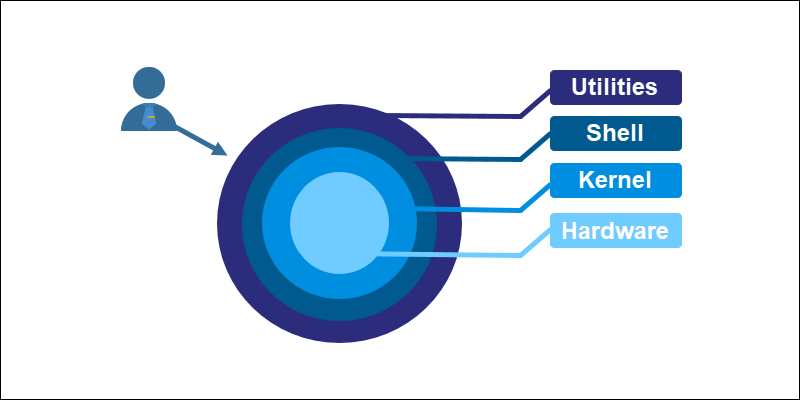

Qu'est-ce que Linux ?
Linux est un Noyau (Kernel), le moteur d'un système. Il gère le matériel (CPU, RAM).
Un système comme Kali Linux est une distribution : il combine le noyau Linux avec des logiciels, dont le Shell.
cours
Linux est un Noyau (Kernel), le moteur d'un système. Il gère le matériel (CPU, RAM).
Un système comme Kali Linux est une distribution : il combine le noyau Linux avec des logiciels, dont le Shell.
Le Shell est le programme qui interprète vos commandes.

Il y a deux types d'utilisateurs :
whoami : Affiche le nom de l'utilisateur actuel.
whoamiouicestmoiwhoamirootid : Affiche les informations détaillées de l'utilisateur (UID, GID, groupes).
iduid=1000(ouicestmoi) gid=1000(ouicestmoi) groups=1000(ouicestmoi),4(adm),24(cdrom),27(sudo)sudo exécute une seule commande en tant qu'administrateur (root).
sudo apt updatesudo su ouvre un nouveau shell en tant que root. Vous restez root
jusqu'à exit. C'est pratique mais plus risqué.
sudo suwhoamirootTout part de la racine.
Les commandes acceptent des paramètres (flags) pour modifier leur comportement, souvent précédés d'un -.
lsdossier1 fichier.txtls -ldrwxr-xr-x 2 user user 4096 oct 14 01:15 dossier1
-rw-r--r-- 1 user user 42 oct 14 01:15 fichier.txtpwd : Où suis-je ?
pwd/home/utilisateur/Documentscd : Se déplacer.
cd /var/logpwd/var/logRépertoires spéciaux :
. : Le répertoire actuel.. : Le répertoire parent (dossier du dessus)cd ..pwd/varls -la : Liste tous les fichiers (-a) en format
long (-l).
ls -latotal 12
drwxr-xr-x 3 user user 4096 oct 14 01:15 .
drwxr-xr-x 5 user user 4096 oct 14 01:10 ..
drwxr-xr-x 2 user user 4096 oct 14 01:15 dossier1
-rw-r--r-- 1 user user 42 oct 14 01:15 fichier.txt
-rw-r--r-- 1 user user 0 oct 14 01:15 .secretChaque ligne de ls -l contient des informations précises :
drwxr-xr-x 2 user user 4096 oct 14 01:15 dossier1
-rw-r--r-- 1 user user 42 oct 14 01:15 fichier.txtd=dossier, -=fichier,
l=lien)
Un alias est un raccourci. Souvent, ll est un alias pour
ls -lah.
alias c='clear'Maintenant, taper c exécutera la commande complète clear qui refresh votre shell.
La commande la plus importante : le manuel !
man lsCeci affiche la documentation complète de ls avec toutes ses options.
cat : Affiche tout le contenu en brut d'un coup.
cat /etc/passwdroot:x:0:0:root:/root:/bin/bash
...less : Affiche le contenu page par page (plus pratique pour les gros fichiers), et on
appuie sur q puor quitter.
less /var/log/sysloghead : Affiche les 10 premières lignes d'un fichier.
head -n 5 /etc/passwdroot:x:0:0:root:/root:/bin/bash
daemon:x:1:1:daemon:/usr/sbin:/usr/sbin/nologin
bin:x:2:2:bin:/bin:/usr/sbin/nologin
sys:x:3:3:sys:/dev:/usr/sbin/nologin
sync:x:4:65534:sync:/bin:/bin/synctail : Affiche les 10 dernières lignes. Très utile avec l'option -f pour
voir un fichier en direct.
tail -f /var/log/syslogecho : Affiche du texte.
echo "Hello World" > greeting.txtcat greeting.txtHello World> crée/écrase un fichier. >> ajoute à la fin.
echo "Append this" >> greeting.txtnano et vim : Éditeur de texte simple, disponible par defaut sur linux
idéal pour débuter.
nano mon_script.shUtilisez Ctrl+X pour quitter, puis Y (ou O) pour sauvegarder.
mkdir -p : Crée un dossier et ses parents s'ils n'existent pas.
mkdir -p projet/src/componentstouch : Crée un fichier vide.
touch projet/src/components/Button.jscp : Copie un fichier ou un dossier.
cp source.txt copie.txtmv : Déplace ou renomme.
mv copie.txt nouveau_nom.txtmv nouveau_nom.txt ./projet/rm : Supprime un fichier.
rm fichier.txtrm -rf : Supprime un dossier et son contenu.
rm -rf projetATTENTION : rm -rf est irréversible. La commande
rm -rf /* peut détruire votre système ⚠️.
chmod modifie les permissions (lecture, écriture, exécution) d'un fichier.
ls -l script.sh-rw-r--r-- 1 user user 22 oct 14 02:10 script.shchmod +x script.shls -l script.sh-rwxr-xr-x 1 user user 22 oct 14 02:11 script.sh+x ajoute la permission d'exécution pour tout le monde.
Un lien symbolique est un raccourci vers un autre fichier ou dossier.
ln -s /var/log/syslog mon_raccourci_logls -l mon_raccourci_loglrwxrwxrwx 1 user user 18 oct 14 03:00 mon_raccourci_log -> /var/log/syslogwhich trouve le chemin complet d'un exécutable.
which python3/usr/bin/python3Mettez en pratique les commandes de base avec une série de défis rapides et amusants.
CmdChallengeLe "pipe" prend la sortie d'une commande et en fait l'entrée de la suivante.
ps aux | grep "apache"Ici, on liste tous les processus, puis on ne garde que les lignes contenant "apache".
grep filtre les lignes d'un document qui contiennent un motif.
grep "error" /var/log/syslogOct 14 02:15 kernel: [ 1.2345] ras: ACPI: CPRC: Found error inject entryfind recherche des fichiers sur tout le système.
find /home -name "*.txt"/home/user/Documents/notes.txtawk traite le texte colonne par colonne. Très puissant pour extraire des infos.
ls -l | awk '{print $1, $9}'-rw-r--r-- greeting.txt
-rwxr-xr-x script.shCeci n'affiche que la colonne des permissions ($1) et celle du nom ($9).
env affiche les variables de session.
env | head -n 3SHELL=/bin/bash
USER=utilisateur
PATH=/usr/local/bin:/usr/bin:/bin$PATH est cruciale : elle liste où le shell cherche les commandes.
ps aux : Liste tous les processus en cours.
ps auxUSER PID %CPU %MEM VSZ RSS TTY STAT START TIME COMMAND
root 1 0.0 0.1 169400 13580 ? Ss 01:50 0:01 /sbin/init
user 1234 0.0 0.0 12345 6789 pts/0 S+ 02:20 0:00 /bin/bashtop : Affiche les processus en temps réel (comme le gestionnaire des tâches).
toptop - 14:25:30 up 2:35, 1 user, load average: 0.08, 0.03, 0.01
Tasks: 123 total, 1 running, 122 sleeping, 0 stopped, 0 zombie
%Cpu(s): 0.3 us, 0.2 sy, 0.0 ni, 99.5 id, 0.0 wa, 0.0 hi, 0.0 si, 0.0 st
MiB Mem : 3944.0 total, 2000.0 free, 1000.0 used, 944.0 buff/cache
MiB Swap: 2047.0 total, 2047.0 free, 0.0 used. 2500.0 avail Mem
PID USER PR NI VIRT RES SHR S %CPU %MEM TIME+ COMMAND
1 root 20 0 169400 13580 10240 S 0.0 0.3 0:01.23 systemdkill termine un processus grâce à son ID (PID), que l'on trouve avec `ps`.
kill 1234df -h : Affiche l'utilisation du disque (h pour "lisible par l'humain").
df -h /Filesystem Size Used Avail Use% Mounted on
/dev/sda1 20G 8.5G 11G 45% /free -m : Affiche l'utilisation de la mémoire RAM (m pour "megabytes").
free -m total used free shared buff/cache available
Mem: 3944 1000 2000 10 944 2500
Swap: 2047 0 2047ping : Teste la connectivité avec une machine.
ping -c 4 google.comcurl : Transfère des données depuis une URL.
curl https://example.comSSH (Secure Shell) est essentiel pour se connecter à une machine distante.
ssh utilisateur@adresse-ip -p portUtilisez grep, find, ssh et d'autres outils pour trouver les
mots de passe et progresser dans ce wargame classique.
git clone est essentiel pour télécharger le code source d'un outil ou document depuis
GitHub.
git clone https://github.com/veltman/clmystery.gitClonez le dépôt et utilisez TOUT ce que vous avez appris pour trouver le coupable.
Démarrer CLIMysteryVous avez maintenant les clés pour être autonome et efficace sur un terminal. La ligne de commande n'est pas une barrière, c'est un super-pouvoir.